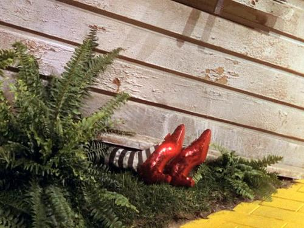

Follow the Yellow Brick Road

The Good Witch of the South is Glinda the Good. She is the most powerful of the Witches. According to the Soldier with Green Whiskers, Glinda:
"knows how to keep young in spite of the many years she has lived."" — The Wonderful Wizard of Oz, chapter 18, "Away to the South"
So she was the most beautiful of the four witches. Later books in Baum's Oz series refer to Glinda as a Sorceress, rather than a Witch.

Here is another witch

Sickest Witch